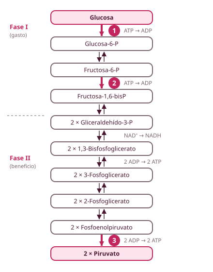
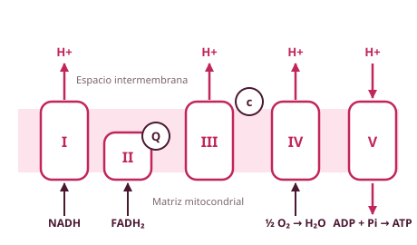

SGLT1 (intestino) y SGLT2 (riñón): cotransporte con Na⁺. GLUT4: músculo y adiposo, depende de insulina. GLUT2: hígado y célula β.
Glucólisis (citoplasma): glucosa → 2 piruvato + 2 ATP netos + 2 NADH. Pasos irreversibles: hexoquinasa, PFK-1 y piruvato quinasa.
Sin O₂: piruvato → lactato (LDH) para regenerar NAD⁺. Con O₂: piruvato → acetil-CoA (piruvato deshidrogenasa) → Krebs → cadena respiratoria.
Krebs por vuelta: 3 NADH + 1 FADH₂ + 1 GTP + 2 CO₂. NADH → 2,5 ATP; FADH₂ → 1,5 ATP. Glucosa: 30-32 ATP (36-38 con 3 y 2).
Pentosas: NADPH + ribosa-5-P, sin ATP. Gluconeogénesis: hígado; precursores lactato (el más importante), glicerol, alanina, piruvato.
El músculo no tiene glucosa-6-fosfatasa: su glucógeno no mantiene la glucemia; el del hígado, sí.
1. Conceptos generales Menos prioritario
Metabolismo: conjunto de reacciones del organismo. Anabolismo: síntesis que consume energía. Catabolismo: degradación que libera energía. Las rutas metabólicas se caracterizan por simultaneidad, interconexión (moléculas compartidas) y el principio de máxima economía (solo funciona lo necesario; p. ej., con glucosa de la dieta no se activa la gluconeogénesis).
La glucosa procede de la dieta (fuente principal) o de fuentes endógenas (gluconeogénesis y glucogenólisis). Se usa para energía (glucólisis y respiración), con fines estructurales (pentosas) o se almacena (glucógeno).
2. Digestión, absorción y transporte Muy importante
Los glúcidos se absorben como monosacáridos (glucosa, fructosa, galactosa). La sacarasa rompe la sacarosa y la lactasa la lactosa.
SGLT1 (enterocito): entran 2 Na⁺ a favor de gradiente y arrastran 1 glucosa o galactosa contra gradiente (transporte activo secundario). La ATPasa Na⁺/K⁺ saca después el sodio gastando ATP.
SGLT2: reabsorción de glucosa y sodio en el riñón.
Hacia la sangre y los tejidos: GLUT (difusión facilitada; al menos 14; una cadena con 12 segmentos transmembrana).
GLUT
Dónde
Km
Función
GLUT1
Todos los tejidos
1 mM
Entrada basal
GLUT2
Hígado, célula β, intestino
15-20 mM
Retira el exceso de glucosa; regula la insulina
GLUT3
Todos los tejidos
1 mM
Entrada basal
GLUT4
Músculo y adiposo
5 mM
Insulinodependiente; aumenta con el entrenamiento
GLUT5
Intestino delgado
—
Transporta sobre todo fructosa
Glucemia basal ≈ 80 mg/dl; a los 30-60 min de comer ≈ 130 mg/dl; a las 2 h vuelve a la basal.
Combustibles de cada tejido
Cerebro: glucosa (necesita aporte continuo). Eritrocito: solo glucosa.
Hígado: prefiere aminoácidos y ácidos grasos; guarda glucógeno y, con mucho exceso, forma triglicéridos.
Tejido adiposo: usa glucosa para formar triglicéridos; la energía la saca de los ácidos grasos.
3. Glucólisis Muy importante
Vía de Embden-Meyerhof: 10 reacciones en el citoplasma, prácticamente universal. Fase I (5 reacciones): glucosa → 2 triosas fosfato, gastando 2 ATP. Fase II (5 reacciones): → 2 piruvatos, formando 4 ATP (fosforilación a nivel de sustrato). Solo hay que saber los pasos irreversibles.

(1) Hexoquinasa · (2) Fosfofructoquinasa-1 · (3) Piruvato quinasa. Las demás reacciones son reversibles.
Paso irreversible
Enzima
Claves
Glucosa → glucosa-6-P
Hexoquinasa (I-III) / glucoquinasa (IV)
Gasta ATP. La G6P queda atrapada (los ésteres fosfóricos no cruzan membranas) y es más reactiva. La IV (glucoquinasa) es hepática y solo actúa sobre glucosa.
Fructosa-6-P → fructosa-1,6-bisP
Fosfofructoquinasa-1
Gasta ATP. La inhibe el exceso de ATP; la activan ADP y la fructosa-2,6-bisfosfato.
Fosfoenolpiruvato → piruvato
Piruvato quinasa
Forma ATP. La inhibe el ATP; la favorece el AMP.
La glucosa-6-P es un cruce: glucólisis, ruta de las pentosas o síntesis de glucógeno.
Salvo glucosa y piruvato, todos los intermediarios son ésteres fosfóricos. 3 reacciones irreversibles y 7 reversibles.
Regulación: transporte de glucosa y las 3 enzimas irreversibles (alostéricas). La insulina la favorece y el glucagón la inhibe.
Fructosa, vía mayoritaria (hígado): fructoquinasa → fructosa-1-P → aldolasa → DHAP + gliceraldehído (→ GAP). Vía minoritaria (fuera del hígado): hexoquinasa → fructosa-6-P. El balance es igual que con glucosa.
Déficit de una enzima de la ruta de la galactosa, sobre todo de la transferasa. Daña el hígado y la vista.
4. Destino del piruvato Muy importante
Sin oxígeno: lactato
La lactato deshidrogenasa (LDH) reduce el piruvato a lactato con el NADH de la glucólisis: así se regenera el NAD⁺ que la glucólisis necesita. Glucólisis anaerobia: solo 2 ATP por glucosa.
Glucosa + 2 ADP + 2 Pi → 2 lactato + 2 ATP + 2 H₂O
Importante en el músculo en esfuerzo, el eritrocito (sin mitocondrias) y el ojo (cristalino, córnea).
El lactato pasa a la sangre: el corazón lo usa como combustible (LDH-H4 → piruvato) y el hígado lo convierte en glucosa. Si se acumula: acidosis láctica. La M4 favorece la reducción a lactato y la H4 la oxidación a piruvato.
Con oxígeno: respiración celular
El piruvato entra en la mitocondria. El NADH citoplasmático entra mediante lanzaderas:
Malato-aspartato (hígado, corazón): el NADH aparece como NADH en la mitocondria. (El OAA se reduce a malato, que cruza, se reoxida a OAA dentro y vuelve como aspartato.)
Glicerol-fosfato (músculo, cerebro): aparece como FADH₂ (rinde menos).
Fase I: piruvato → acetil-CoA + CO₂ + NADH por el complejo piruvato deshidrogenasa (descarboxilación oxidativa irreversible). 3 enzimas y 5 coenzimas: CoA (B5), NAD⁺ (B3), FAD (B2), TPP (B1) y ácido lipoico. El acetil-CoA va al ciclo de Krebs o a biosíntesis (ácidos grasos, acetilcolina…).
5. Ciclo de Krebs Muy importante
También ciclo del ácido cítrico o de los ácidos tricarboxílicos; en la matriz mitocondrial; 8 reacciones (no hace falta saberlas al detalle).
Por cada acetil-CoA: 3 NADH + 1 FADH₂ + 1 GTP (ATP) + 2 CO₂
Es anfibólico: el succinil-CoA sirve para fabricar el hemo; el α-cetoglutarato da glutamato y el oxalacetato aspartato. Las reacciones anapleróticas reponen los intermediarios (la principal: piruvato → oxalacetato).
6. Cadena respiratoria y fosforilación oxidativa Muy importante
En la membrana mitocondrial interna. Los electrones van de moléculas con potencial redox más negativo a más positivo, liberando energía.

NADH → complejo I → coenzima Q → complejo III → citocromo c → complejo IV (citocromo oxidasa) → O₂ → H₂O. El FADH₂ entra por el complejo II. El complejo V es la ATP sintasa.
El último aceptor de electrones es el oxígeno, que forma agua. Los citocromos son hemoproteínas.
El transporte bombea H⁺ al espacio intermembrana; al volver por el complejo V (ATP sintasa) se forma ATP: fosforilación oxidativa.
Teórico: NADH → 3 ATP, FADH₂ → 2 ATP. Real: NADH → 2,5 ATP, FADH₂ → 1,5 ATP.
Origen (por glucosa)
ATP (valores reales)
Glucólisis (citoplasma)
2
Fase I: 2 NADH
5
Krebs: 6 NADH + 2 FADH₂ + 2 GTP
15 + 3 + 2
Subtotal
27
2 NADH de la glucólisis por malato-aspartato / glicerol-fosfato
+5 / +3
Total
32 / 30 ATP (36-38 con los valores teóricos)
7. Especies reactivas del oxígeno Importante
ROS/ERO (H₂O₂) y radicales libres (superóxido ·O₂⁻, hidroxilo ·OH): muy reactivos (electrones desapareados), dañan ADN, proteínas, lípidos y glúcidos. Relacionados con cáncer, enfermedad cardiovascular y neurodegenerativa (Alzheimer).
Fuentes endógenas: fugas de electrones de la cadena respiratoria (complejo I-Q y Q-III), metabolismo de xenobióticos (etanol, fármacos) y fagocitosis. Exógenas: contaminantes y radiaciones ionizantes.
Si las ROS superan la capacidad antioxidante: estrés oxidativo.
8. Ruta de las pentosas fosfato Muy importante
También ruta del 6-fosfogluconato. Citoplasma; empieza con glucosa-6-P. No produce ni gasta ATP. Muy activa en hígado, tejido adiposo, riñón y eritrocito; poco activa en el músculo.
Principal fuente de NADPH (síntesis de ácidos grasos, esteroides, desoxirribonucleótidos).
Aporta ribosa-5-P para nucleótidos (ATP, NAD⁺, CoA, ácidos nucleicos).
Fase no oxidativa (reversible): ribulosa-5-P → ribosa-5-P (isomerización); transcetolasas pasan 2 C y transaldolasas 3 C; acaba en intermediarios de la glucólisis.
Según lo que necesite la célula: ribosa + NADPH (células en división: fase I + primer paso de la II); solo ribosa (músculo: fase II al revés); solo NADPH (tejido adiposo: ruta completa y lo sobrante vuelve a la glucólisis).
9. Gluconeogénesis Muy importante
Síntesis de glucosa desde precursores no glucídicos, sobre todo en el hígado (y riñón, más en el ayuno). Imprescindible para el tejido nervioso y los eritrocitos (la hipoglucemia puede causar coma). Ocurre en mitocondria y citoplasma; comparte las 7 reacciones reversibles de la glucólisis y rodea las 3 irreversibles:
Paso de la glucólisis que se rodea
Enzimas de la gluconeogénesis
Piruvato quinasa
Piruvato carboxilasa (mitocondria, biotina, ATP): piruvato → OAA. El OAA sale como malato y vuelve a OAA. PEP carboxiquinasa (citoplasma, GTP): OAA → PEP
Fosfofructoquinasa-1
Fructosa-1,6-bisfosfatasa
Hexoquinasa
Glucosa-6-fosfatasa (retículo endoplásmico; no está en el músculo)
Lactato: el sustrato más importante (músculo y eritrocitos); la LDH lo oxida a piruvato.
Glicerol: glicerol quinasa → glicerol-3-P → DHAP. Es el más eficaz y no pasa por la mitocondria.
Alanina: transaminación → piruvato.
Se necesitan 2 moléculas de precursor por glucosa. Con carga energética alta el OAA va a gluconeogénesis; con carga baja, al ciclo de Krebs.
En la clínica · alcohol e hipoglucemia
Metabolizar etanol sube el NADH citoplasmático: el piruvato se desvía a lactato y el OAA a malato, y se bloquea la gluconeogénesis → hipoglucemia y acidosis láctica.
10. Metabolismo del glucógeno Muy importante
Glucosas con enlaces α(1→4) y α(1→6); cada rama tiene muchos extremos no reductores, por donde empieza la degradación. Síntesis y degradación no ocurren a la vez.
Glucogenólisis (citoplasma): la glucógeno fosforilasa rompe α(1→4) por fosforólisis y libera glucosa-1-P (mayoritaria). Cerca de una rama, la enzima desramificante (transferasa + α-1,6-glucosidasa) mueve 4-6 glucosas y libera la del enlace α(1→6) como glucosa libre (minoritaria). La mutasa pasa la glucosa-1-P a glucosa-6-P.
Hígado: la G6P → glucosa libre (glucosa-6-fosfatasa): el glucógeno hepático mantiene la glucemia.
Músculo: sin glucosa-6-fosfatasa, la G6P se usa como combustible propio.
Glucogenogénesis: G6P → G1P → (pirofosforilasa, glucógeno sintasa, enzima ramificante) → glucógeno, sobre un cebador: la glucogenina.
En la clínica · glucogenosis
Enfermedades por déficit de alguna enzima del metabolismo del glucógeno: no se moviliza bien o se acumula un glucógeno anómalo.